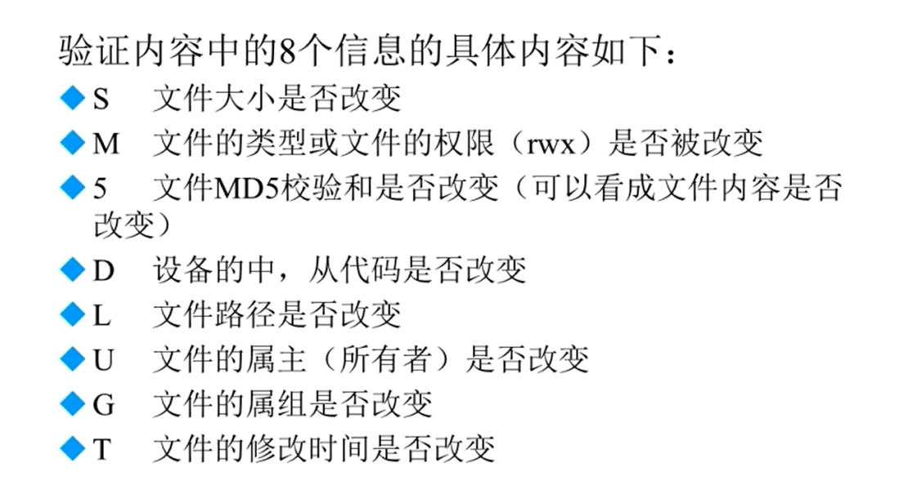
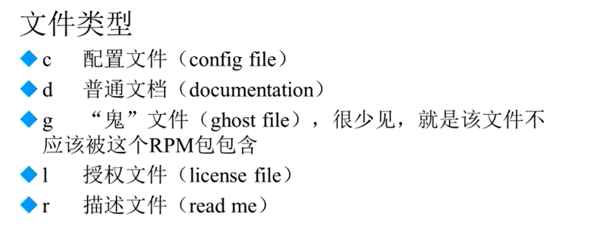
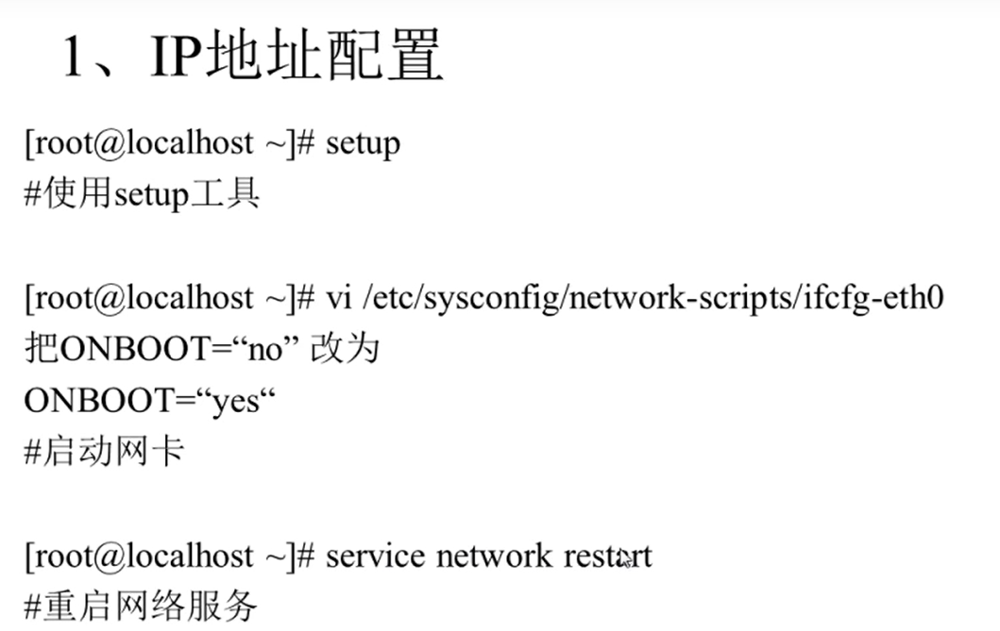
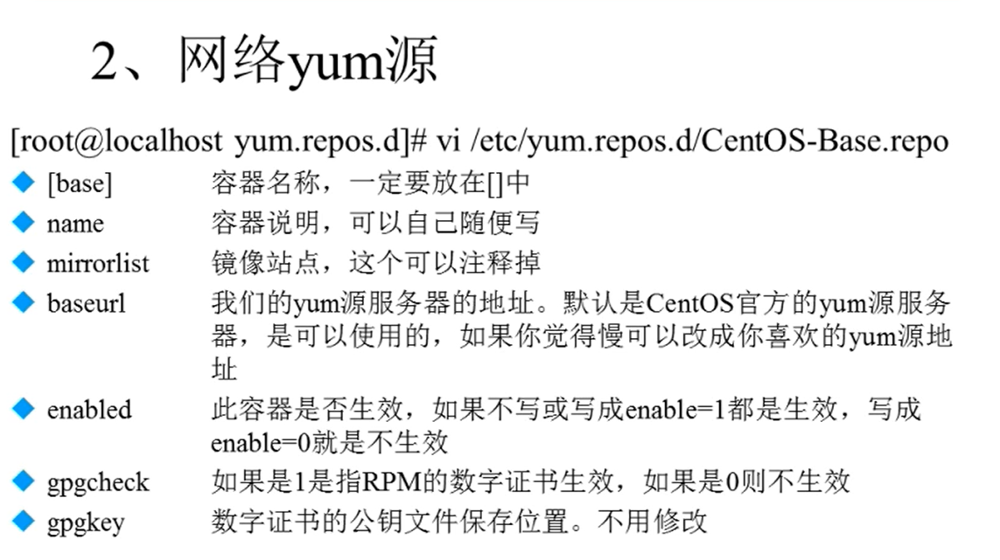
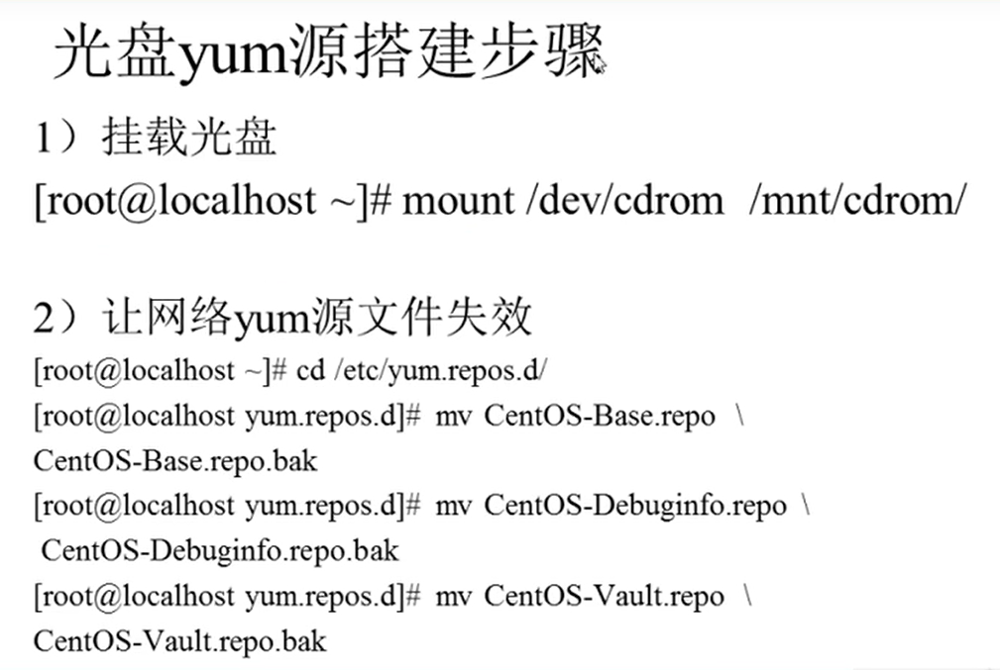
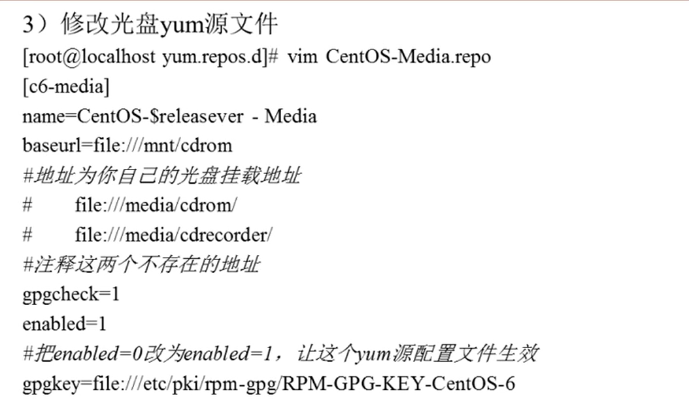
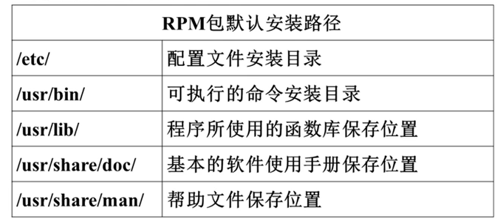

# 软件包管理
注意：Ubuntu 的软件包格式是 deb，如果要安装 rpm 的包，则要先用 alien 把 rpm 转换成 deb。需要先安装 alien， 默认没有安装，所以首先要安装它
# 第一步，安装alien
sudo apt-get install alien
#第二步，将rpm转换位deb，完成后会生成一个同名的xxxx.deb
sudo alien xxxx.rpm
#第三步，安装deb文件
#安装 注意，用alien转换的deb包并不能保证100%顺利安装，所以可以找到deb最好直接用deb
sudo dpkg -i xxxx.deb
# 软件包管理简介
源码包（C 语言源码）
- 脚本安装包
源码包的优点：
- 开源，如果有足够的能力，可以修改源代码
- 可以自由选择所需的功能
- 软件是编译安装，所以更加适合自己的系统，更加稳定也效率更高
- 卸载方便
源码包的缺点：
- 安装过程步骤较多，尤其安装较大的软件集合时，容易出现拼写错误
- 编译过程时间较长，安装比二进制安装时间长
- 因为是编译安装，安装过程中一旦报错新手很难解决
二进制包（RPM 包、系统默认包）
二进制包的优点：
- 包管理系统简单，只通过几个命令就可以实现包的安装、升级、查询和卸载
- 安装速度比源码包安装快得多
二进制包的缺点：
- 经过编译，不再可以看到源代码
- 功能选择不如源码包灵活
- 依赖性
# RPM 包管理 - rpm 命令管理
# RPM 包命名规则
httpd-2.2.15-15.e16.centos.1.i686.rpm 包全名
httpd 软件包名
2.2.15 软件版本
15 软件发布的次数
e16.centos 适合的 Linux 平台
i686 适合的硬件平台
rpm rpm 包扩展名（仅用于标识）
# RPM 包依赖性
树形依赖：a→b→c
环形依赖：a→b→c→a
模块依赖：模块依赖查询网站 www.rpmfind.net
# 安装升级与卸载
# 包全名与包名：
包全名：操作的包是没有安装的软件包时，使用包全名，而且要注意路径。
包名：操作已经安装的软件包时，使用包名，是搜索 /var/lib/rpm/ 中的数据库。
# RPM 包安装：
rpm -ivh 包全名
选项：
-i (install) 安装
-v (verbose) 显示详细信息
-h (hash) 显示进度
—nodeps 不检测依赖性
# RPM 包升级：
rpm -Uvh 包全名
选项：
-U (upgrade) 升级
# 卸载：
rpm -e 包名
选项：
-e (erase) 卸载
—nodeps 不检查依赖性
# 查询是否安装：
rpm -q 包名 # -q 查询 (query)
rpm -qa # -a 所有 (all) 查询所有的已经安装的 RPM 包
# 查询软件包详细信息：
rpm -qi 包名
选项：-i 查询软件信息（information）
-p 查询未安装包信息（package）
# 查询包中文件安装位置：
rpm -ql 包名
选项：-l 列表（list）
-p 查询未安装包信息（package）
# 查询系统文件属于哪个 RPM 包：
rpm -qf 包名
选项：-f 查询系统文件属于哪个软件包（file）
查询软件包的依赖性：
rpm -qR 包名
选项：-R 查询软件包的依赖性（requires）
-p 查询未安装包信息（package）
# RPM 包验证：
rpm -V 已安装的包名
选项：-V 校验指定 RPM 包中的文件（verify）


# RPM 包中文件提取：
常用于由于误操作删除包中文件后进行修复工作。
rpm2cpio 包全名 | cpio -idv ./ 文件绝对路径
# rpm2cpio：将 rpm 包转换为 cpio 格式的命令
cpio 是一个标准工具，它用于创建软件档案文件和从档案文件中提取文件。
cpio 选项 <[文件 | 设备]
选项：-i：copy-in 模式，还原
-d：还原时自动新建目录
-v：显示还原过程
# RPM 包管理 - yum 在线管理
# IP 地址配置和网络 yum 源

注意：setup 只能在 Red-Hat 系列下的 Linux 中才可以使用

# yum 命令
# 查询
yum list # 查询所有可用软件包列表
yum search 关键字 # 搜索服务器上所有和关键字相关的包
# 安装
yum -y install 包名
选项：
install 安装
-y 自动回答 yes
# 升级
yum -y update 包名
选项：
update 升级
-y 自动回答 yes
# 卸载
yum -y remove 包名
选项：
remove 卸载
-y 自动回答 yes
# yum 软件组管理命令
yum grouplist # 列出所有可用的软件组列表
yum groupinstall 软件组名 # 安装指定软件组，组名可以由 grouplist 查询出来
yum groupremove 软件组名 # 卸载指定软件组
# 光盘 yum 源搭建


# 源码包管理
# 源码包和 RPM 包的区别

部分 RPM 包可能存在个体差异，但大体遵循这个规范。
而源码包安装在指定位置当中，一般是 /usr/local/ 软件名
安装位置不同带来的影响：
RPM 包安装的服务可以使用系统服务管理命令（service）来管理，例如 RPM 包管理的 apache 的启动方法是：
- /etc/rc.d/init.d/httpd start
- service httpd start
而源码包安装的服务则不能被服务管理命令管理，因为没有安装到默认路径中。所以只能用绝对路径进行服务的管理，如：
- /usr/local/apache2/bin/apachectl start
# 源码包安装过程
- 下载源码包
- 解压缩下载的源码包
- 进入解压缩目录
- ./configure 软件配置与检查
- 定义需要的功能选项
- 检测系统环境是否符合安装要求
- 把定义好的功能选项和检测系统环境的信息都写入 Makefile 文件，用于后续的编辑
- make 编译（如果此时不想安装，可用 make clean 命令清空编译产生的临时文件）
- make install 编译安装
# 源码包的卸载
不需要卸载命令，直接删除安装目录即可，不会遗留任何垃圾文件。
# 如何判断是安装源码包还是 RPM 包？
看这个软件包是打算干什么用的，如果是对外提供访问，以后会有很多的访问量，这个时候应该采用源码包安装，因为源码包是经过编译的，它更加适合当前计算机，能有更高的执行效率；如果只是本机使用，可以用 RPM 包安装会更加简单。
# 脚本安装包
- 脚本安装包并不是独立的软件包类型，常见安装的是源码包
- 是人为把安装过程写成了自动安装的脚本，只要执行脚本，定义简单的参数，就可以完成安装。
- 非常类似于 Windows 下软件的安装方式。
- 通常会有 setup.sh 文件来进行安装
# Webmin 的作用
Webmin 是一个基于 Web 的 Linux 系统管理界面，可以通过图形化的方式设置用户账号，Apache、DNS、文件共享等服务。